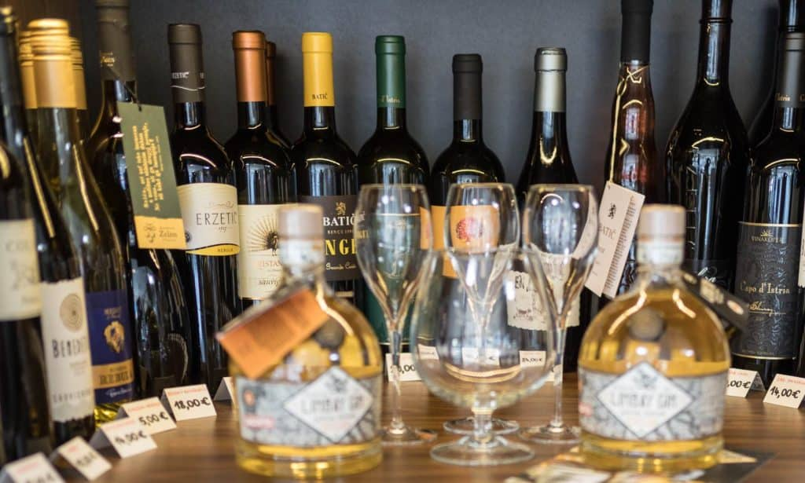
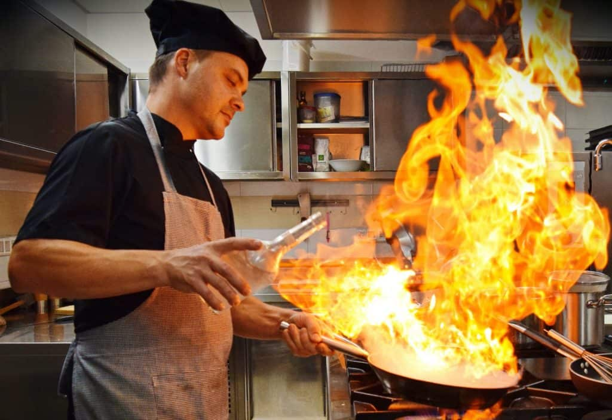
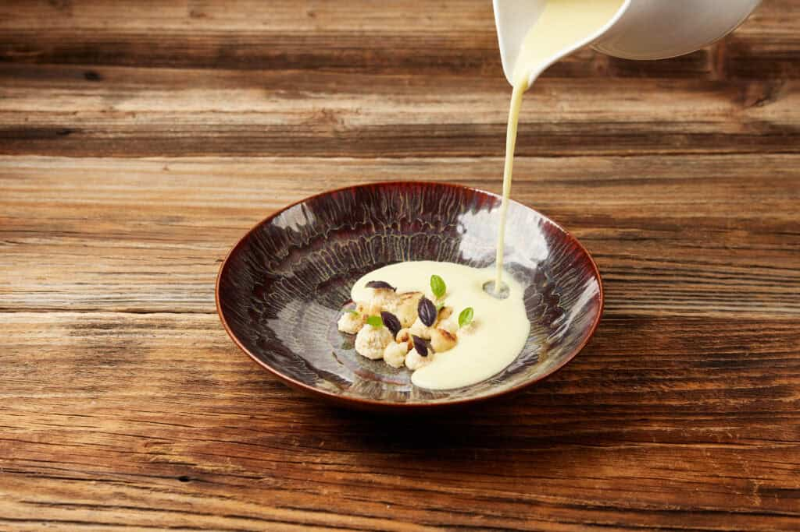
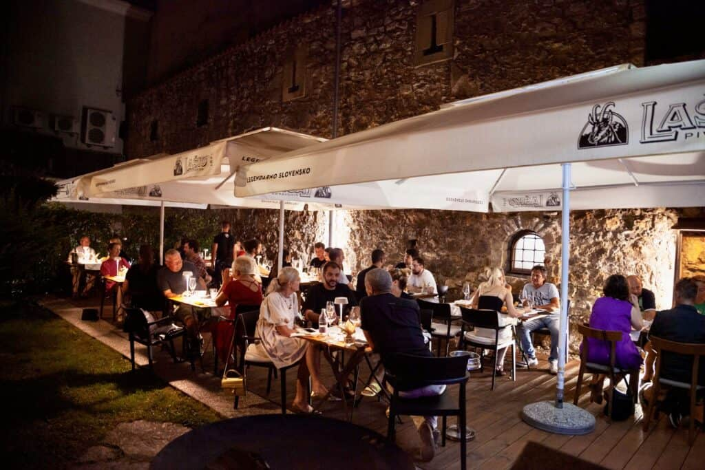

Vinoteka
Vino, ki ga lahko odnesete domov
V naši vinoteki najdete edinstven izbor vrhunskih domačih in tujih vin. Če vam je katero še posebej všeč, ga lahko odnesete domov po ugodnejši ceni.
»Počasno kuhanje v hitri gostilni«
Chef in lastnik Miran Ojsteršek vsak dan obišče lokalno celjsko tržnico – po sveže sestavine in po navdih za malice, kosila in večerje.
Pon–pet 10–22 · sob 9–22 · ned. in prazniki zaprto

Oštirkastaro pogovorno ime za krčmarico
Ime nosi pridih tradicije, vsebina pa navdušuje z novostmi. Sledimo slovenski tradiciji in utripu narave – eno izmed bolj prepoznavnih gostišč v središču Celja.
Vsak dan s tržnice
Jedilnik ne nastaja za pisalno mizo. Chef Miran Ojsteršek, lastnik z dolgoletnimi izkušnjami in strastjo do kuhanja, vsak dan obišče lokalno tržnico. Kar je tisti dan najbolj sveže, pride na krožnik – zato so meniji pri nas sezonsko obarvani.
Da bomo za vas skrbno opravili nabavo na lokalni celjski tržnici, spekli sveži kruh in se pripravili na vaš obisk, vas prosimo za rezervacijo mize.
— ekipa Gostilne Oštirka

Pripravljamo tudi posebne kulinarične dogodke in sezonske menije. Aktualni jedilnik je objavljen na ostirka.com.
Kako poteka
Rezervirate mizo na 031 840 200 ali prek spletne rezervacije.
Glede na rezervacije opravimo nabavo na celjski tržnici in spečemo sveži kruh.
Na Linhartovo 6 v Celju – v gostilno ali na teraso ob starem mestnem obzidju.

Terasa
Staro celjsko mestno obzidje nudi naši terasi prijetno senco in edinstveno vzdušje – za kosilo sredi dneva ali dolg poletni večer.

Vinoteka
V naši vinoteki najdete edinstven izbor vrhunskih domačih in tujih vin. Če vam je katero še posebej všeč, ga lahko odnesete domov po ugodnejši ceni.
Hiša zraven
Takoj ob gostilni, na Linhartovi 4, deluje naša Mesnica Oštirka.
Želite podariti gurmansko razvajanje Oštirke? Nudimo nakup vrednostnega darilnega bona po vaši izbiri.
Pokličite 031 840 200Pogosta vprašanja
Prosimo za rezervacijo mize, da lahko pravočasno opravimo nabavo na celjski tržnici, spečemo sveži kruh in se pripravimo na vaš obisk. Pokličite 031 840 200 ali uporabite spletno rezervacijo.
Ne. Ob nedeljah in praznikih je gostilna zaprta. Od ponedeljka do petka smo odprti od 10:00 do 22:00, v soboto od 9:00 do 22:00.
Da. Vino, ki vam je všeč, lahko odnesete domov po ugodnejši ceni.
Na Linhartovi 4 v Celju, tik ob gostilni. Telefon: 041 664 422.
Rezervacije in kontakt
| Ponedeljek–petek | 10:00–22:00 |
|---|---|
| Sobota | 9:00–22:00 |
| Nedelja in prazniki | zaprto |
| Ponedeljek–petek | 8:00–16:00 |
|---|---|
| Sobota | 8:00–13:00 |
| Nedelja in prazniki | zaprto |